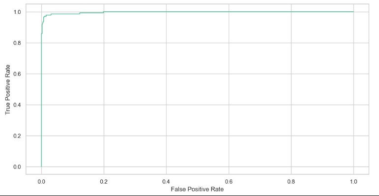
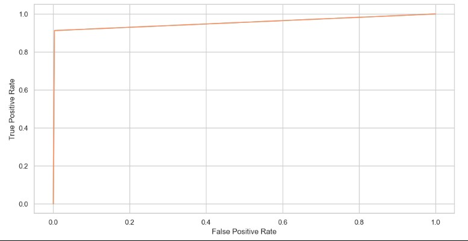

PROJECT SNAPSHOT
Business Goal: Automate spam filtering for real-world email/SMS pipelines to protect user trust and reduce manual moderation costs.
Key Result: RNN model deployed with high performance; optimized the balance between phishing protection (Recall) and legitimate message delivery (Precision).
Tech Stack: Python, TensorFlow/Keras, Scikit-Learn, RNN Architectures.
I. Executive Summary & Business Context
Spam messages expose users to phishing and fraud risks while degrading platform trust. This project built an automated filtering pipeline for real-world email/SMS environments, ensuring messages are classified before reaching the end-user. The primary objective was balancing spam recall with the prevention of false positives.
II. Exploratory Data Analysis & Strategy
One of the first questions I faced was whether the 87% non-spam to 13% spam split was a true hurdle or just a common characteristic of the data. Rather than jumping straight to resampling techniques, I decided to establish a performance baseline first. I wanted to see how the models would handle the data in its raw form, allowing me to measure precision and recall without any external intervention.

The analysis revealed distinct structural differences: most non-spam emails are fewer than 100 characters long, whereas spam messages tend to cluster around the 160-character mark. These insights guided the subsequent modeling approach.

III. Methodology & Technical Approach
I benchmarked three distinct modeling strategies, focusing on Precision (minimizing false alarms for legitimate users) and Recall (maximizing the detection of actual spam):
- Multinomial Naive Bayes: Provided a strong baseline with high spam recall (0.93), capturing the vast majority of threats while maintaining high precision (0.95). The ROC-AUC was 0.98
- Bernoulli Naive Bayes: Prioritized extreme precision to ensure zero disruption to legitimate traffic (1.00 recall for "Ham"). This is ideal for banking or critical support environments where blocking a legitimate message is more costly than letting some spam pass through. The ROC-AUC was 0.997
- RNN Model: Achieved the optimal balance, with high precision (0.98) and strong recall (0.91). This indicates a sophisticated ability to distinguish between classes while keeping false alarms at a near-zero level for legitimate users. The ROC-AUC was 0.95


IV. Understanding the Metrics
In this project, these metrics serve specific business functions:
- Precision: Measures the "trustworthiness" of the filter. High precision means that when the model labels an email as "spam," it is almost certainly correct. This prevents legitimate, important emails from being accidentally hidden from the user.
- Recall: Measures the "thoroughness" of the filter. High recall means the model is excellent at catching the majority of spam messages entering the pipeline. This is critical for minimizing user exposure to phishing and fraud.
V. Business Impact & Value Proposition
This project moves beyond academic metrics to solve specific operational challenges:
- Risk Mitigation: By achieving high recall, the system proactively identifies phishing and fraud attempts before they reach the user.
- Operational Cost Reduction: Automating the filtering process reduces the volume of tickets handled by manual moderation teams.
- Protecting Customer Lifetime Value: High precision ensures legitimate, critical communications are not incorrectly flagged, preventing revenue loss and customer churn.
- Scalability: The solution provides a scalable automated infrastructure capable of processing thousands of events per second.
VI. Full Technical Implementation
You can find the detailed code, analysis, and documentation in spam-detection.ipynb:
View complete Python Notebook on GitHub